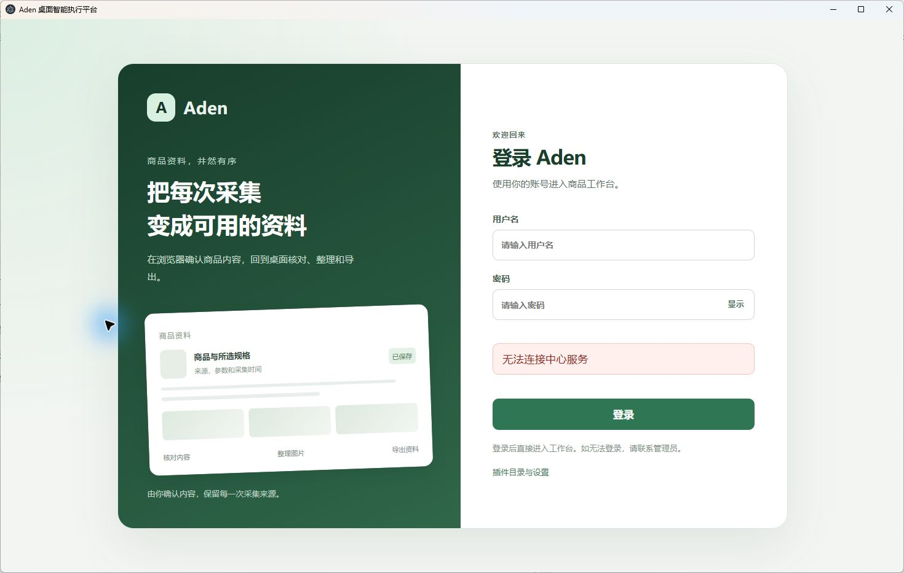

电脑操作已由用户Escape停止。设置点击结果未知，后续页面与本报告内置浏览器预览没有继续执行。本报告已生成并检查结构、链接和图片文件；尚未进行浏览器整页视觉核对。登录截图是本轮实际画面，采购原型、设计图及旧合成截图未用作当前页面通过证据。
本轮结果及使用入口
7项定向观察：登录展示局部通过1项、受阻6项。首次普通启动未通过单独保留，恢复后局部通过没有覆盖该失败。中心连接实际未通过：安装版显示无法连接中心服务，18093未监听；完整业务项因前提缺失受阻。原18项完整业务沿用10月1日判定：0通过、17受阻、1未执行，本轮完整业务新执行0项；没有代用户接受。
桌面入口：C:\Users\admin\AppData\Local\Programs\Aden Local Test\Aden Local Test.exe；中心http://127.0.0.1:18093。本轮检查时中心和Redis均离线。报告当前以本地文件交付，没有创建浏览器标签。
中文业务模块进度
横向查看完整表格。设计、源码、技术检查、业务结果和用户接受分别列出，历史技术结果未作本轮新通过。
| 模块 | 设计 | 源码实现 | 技术检查 | 实际页面/业务结果 | 用户怎样使用 | 缺口与业务影响 | 用户接受 |
|---|
| 执行底座与任务、事件 | 现行统一设计及已批准底座切片 | RuoYi任务内核、REST/ETag、审计/Outbox、可恢复SSE；Electron安全壳；低权限Runner simulator、离线Fake Agent。采集任务读取权限映射已在源码中。 | 历史底座Java/MySQL、跨进程合成成功/取消验证；旧任务读取18项定向检查。10月1日新包构建已记录。本轮未重复构建/测试。 | 本轮中心离线，任务、事件与统计页面受阻；旧隔离库结果未沿用为当前原库通过。 | 环境恢复后在桌面查看任务、状态与回执。 | 原库缺Aden表及Runner用途；没有当前有效空间/成员依据和新心跳。 | 待确认 |
| 审批与真实动作控制 | 动作内容绑定、逐次确认、单次消费、未知结果回查等候选/后续要求 | 当前可核实的是CORE任务命令、取消和回执门禁；源码未检出可确认的独立生产审批功能。 | CORE取消/幂等历史技术检查不能代表外发审批通过。 | 采购/微信批准发送链路未执行，无实际生产审批页面证据。 | 当前不能据底座代码直接批准真实外发。 | 需独立实现与验证审批、连接器和动作回查链路。 | 待确认 |
| 安装版与本地同步 | 当前用户安装、本地同步与候选发布形态 | Aden Local Test 0.3.0，固定安装路径；可见编译目录与sync:local脚本；云端手动打包配置。 | 本轮19个关键文件与10月1日基线匹配，桌面bundle与工作区相同；未重新打包/同步。云端打包、签名、发布仍未验证。 | 首次PowerShell启动退出9，日志为bad option；显式环境定向启动后实际看见登录页并保存回读截图。 | 从本机EXE启动。登录页有插件目录与设置入口。 | 常规启动路径仍有现场失败；诊断启动成功不等于已修复脚本或完整安装业务通过。 | 待确认 |
| 京东详情页手动采集 | 已批准当前详情页七区提取、预览、统一保存与区域加入/排除 | Chrome扩展、桌面桥接、后端保存已编码；页面/规格变化失效、防重放、参数行来源及超限拒绝等已有代码。 | 10月1日扩展52项、Host20项及后端75项为历史合成/定向检查；本轮仅核对分发文件。 | 本轮未访问或采集真实京东，也未加载Chrome扩展。 | 用户手动搜索/打开详情→插件按区提取→核对→确认保存。当前联机不能完成。 | 原库/中心缺前提；Host注册指向另一安装；真页和完整异常矩阵未完成。 | 待确认 |
| 商品库与内容、图片整理 | 商品去重、快照版本、人工备注/图片来源、缺图及恢复规则 | 商品列表/详情、快照版本、人工补充与图片整理；取消手动新增、商品删除、回收站入口。 | 历史合成保存闭环及组件检查已记录；本轮未写数据、未重跑业务。 | 当前原库没有Aden表，商品列表/详情/图片新截图未取得。旧隔离空间0商品不代表原库当前查询成功。 | 恢复后从商品库查来源、版本及图片，保留采集原文与人工整理。 | 缺当前原库业务样本和有效会话；保存/版本/缺图恢复未实测。 | 待确认 |
| Excel、图片包与导出记录 | 选择范围、冻结版本、缺失计数、权限回读 | 后端导出任务与文件处理，桌面范围确认和导出记录页已有代码。 | 历史合成导出与定向测试；本轮未生成或打开Excel/ZIP成品。 | 本轮受原库/会话/样本条件阻塞，未取得导出页面和成品证据。 | 环境恢复后选择商品或当前筛选范围生成Excel/ZIP，再查导出记录。 | 需在获明确授权的样本范围执行导出并打开表格、解包核对冻结版本。 | 待确认 |
| 扩展与Native Host分发 | 固定安装目录、受限本机桥及兼容诊断 | 扩展与Host已随本机安装资源分发，安装设置页有固定目录检测/复制。 | 本轮19文件哈希匹配；manifest与Chrome注册目标只读核对。 | 设置点击时用户Escape中止；Host注册仍指向Aden Collection Test，不能称当前安装版已连接。 | 用户可从安装版设置取得扩展目录，实际Chrome加载与注册兼容需继续检查。 | 实际加载、配对/兼容页面证据缺失；本轮未改注册或权限。 | 待确认 |
| 采购询价 | 需求、费用/报价比较、逐次确认与停止条件已有设计 | 存在本地交互原型；没有可核实的生产连接器。 | 历史原型37项通过仅限本地演示覆盖；未本轮重跑。 | 未联系真实供应商，未实现生产任务/询价链路；本轮未打开原型替代安装版。 | 原型可供评审流程，不能对外询价。 | 生产任务、金标/故障集、平台和Runner集成未完成。 | 生产能力未接受 |
| 微信客服 | 长期候选设计，真实范围与固定UIA条件待明确 | 未实现微信连接器。离线Agent Fake不能视为客服。 | 消息识别、ERP、草稿失效、逐次批准与发送未验证。 | 未读取或发送真实微信消息。 | 当前没有可用客服入口。 | 需独立范围决定、实现与实机试点，不能由商品采集通过推导。 | 生产能力未接受 |
逐项检查与实际截图
规则来源为统一设计第五部分；完整执行前内容见本轮手工清单，内部对应和实际结果见业务记录。
1. 安装版启动与登录页（局部） 通过
前提：固定EXE、原profile、local-test/18093；不需账号。
操作：普通安装启动失败后保存诊断；显式环境定向启动；定位唯一安装窗口并激活、拍图。未填写或提交登录。
执行前预期：实际窗口可见；空账号/密码、无空间选择；中心离线明确提示。
实际情况：08:23普通启动退出码9，错误为bad option: --user-data-dir；08:25定向启动进程584在5秒检查内未退出，随后窗口显示登录页。账号/密码为空，无空间选择，提示无法连接中心服务。
证明边界：只证明恢复后登录展示与真实离线反馈，保留首次启动未通过；不使完整登录/隔离业务通过。
截图情况：已截图并以原始尺寸回读
不足与影响：普通启动失败尚未修复；未登录工作台。

本轮实际安装版截图，原图1470×933；已保存并回读。2. 离线设置与复制目录 受阻
前提：安装版与已有扩展文件。
操作：点击登录页插件目录与设置；须核对页面、复制路径并返回。
执行前预期：离线可查看当前目录，版本一致，复制值完整且可返回。
实际情况：点击动作返回用户物理Escape停止电脑操作；动作结果未知，没有刷新观察，不重试。
证明边界：此前离线设置局部6项仅作为10月1日历史证据，本轮未重新通过。
截图情况：截图阻塞：用户停止电脑操作
不足与影响：没有设置、复制和返回的新证据。
3. 关于页与实际运行版本 受阻
前提：关于入口可达。源码路由为登录保护。
操作：待有权限已有会话后进入关于并核对安装元数据。
执行前预期：0.3.0、local-test、18093与实际文件一致。
实际情况：本轮未登录；源码关于路由需要认证。电脑操作已停止，未进入关于。文件元数据已只读确认。
证明边界：文件版本不能替代关于页截图。
截图情况：截图阻塞：会话及操作前提缺失
不足与影响：缺关于页面截图。
4. 工作台与采集任务列表、详情 受阻
前提：原库schema、中心、有效成员/会话、已有任务。
操作：条件恢复后只读工作台→采集任务→已有详情，并对照后台数据。
执行前预期：统计真实，失败不当零，列表详情权限正确、错误可辨。
实际情况：18093无监听；原ry-vue的Aden表0张，没有可用业务会话。旧18项读取权限修复及同步留为历史技术证据，不把旧空间0任务计成本轮查询。
证明边界：旧失败及修复均保留；本轮没有任务页面复验。
截图情况：截图阻塞：中心/原库前提缺失
不足与影响：无法核对统计、任务列表/详情及实际状态。
5. 商品库、图片与导出记录 受阻
前提：原库、已有有效会话、预先有权读取的商品/文件。
操作：恢复后只读商品列表→详情→图片→已有导出记录。
执行前预期：SKU、版本、人工来源、图片与缺失数量、冻结导出版本一致。
实际情况：原库Aden表0张，中心离线；本轮没有当前原库商品/任务查询、保存或生成导出。
证明边界：当前无商品/导出页面截图，旧合成链路仅保留历史。
截图情况：截图阻塞：原库/中心/样本缺失
不足与影响：列表详情、图片恢复、Excel/ZIP成品均未实测。
6. 手动采集、扩展与Native Host 受阻
前提：兼容注册、真实Chrome扩展/受控页、原库与已有明确写入范围。
操作：本轮只读文件、manifest和Host注册，不加载扩展、不采集。
执行前预期：当前安装与注册目标一致，实际链路经过独立浏览器操作证明。
实际情况：安装文件哈希匹配；Host注册指向另一Aden Collection Test。没有本轮Chrome扩展/真页截图或保存证据。
证明边界：分发文件核对不计实际采集通过。
截图情况：截图阻塞：实际通道与原库前提未成立
不足与影响：需明确兼容注册处理及实际Chrome通道检查；本轮未修改注册。
7. 执行底座、审批事件与Runner联机 受阻
前提：原中心、空间成员、有效Runner凭据和原实例。
操作：只读进程/监听、托管用途元数据与最近成功心跳。
执行前预期：新成功心跳、原实例身份和当前中心一致才能称在线。
实际情况：18093/16393未监听；未找到Aden Runner进程。最后成功心跳2026-10-01 18:14:33上海时间，原库Runner用途缺失。旧restore-runner.py未运行。
证明边界：环境JSON属技术证据；当前不能验证任务/审批/事件业务。
截图情况：联机页面截图受阻；只读技术元数据不适用截图
不足与影响：不得自动创建空间、成员、凭据或替代Runner。
环境和历史证据
- 原库localhost:3306/ry-vue的Aden表0张，Runner托管用途不存在；没有迁移、创建或复制数据库。
- 19个安装文件与10月1日基线一致；桌面bundle与工作区一致，未并行打包/覆盖运行包。
- Host注册指向另一Aden Collection Test；本轮未改注册、未加载Chrome扩展。
- Runner最后成功心跳为10月1日18:14:33，无本轮原实例新心跳。
原库、监听、安装哈希、注册及Runner回读 · 普通启动失败 · 退出9错误原文 · 恢复启动 · 10月1日完整业务及局部历史 · 旧任务读取失败及修复
最小下一步
- 恢复电脑操作后，继续安装版设置/复制目录、关于页，并在本对话内置浏览器实际打开本报告核对。
- 由用户明确原库补表、已有托管用途恢复及空间/成员前提的具体范围，或提供已迁移且核实的原配置；只恢复既有原中心/Runner。不同动作分别核对授权。
- 核对当前安装的Host注册兼容及实际Chrome扩展通道；前提齐备再定向复验任务、商品、图片和导出，保留已有失败与证据。
采购生产连接器、微信客服、云端构建、正式签名和发布仍未完成，不属于本次只读检查的实施范围。